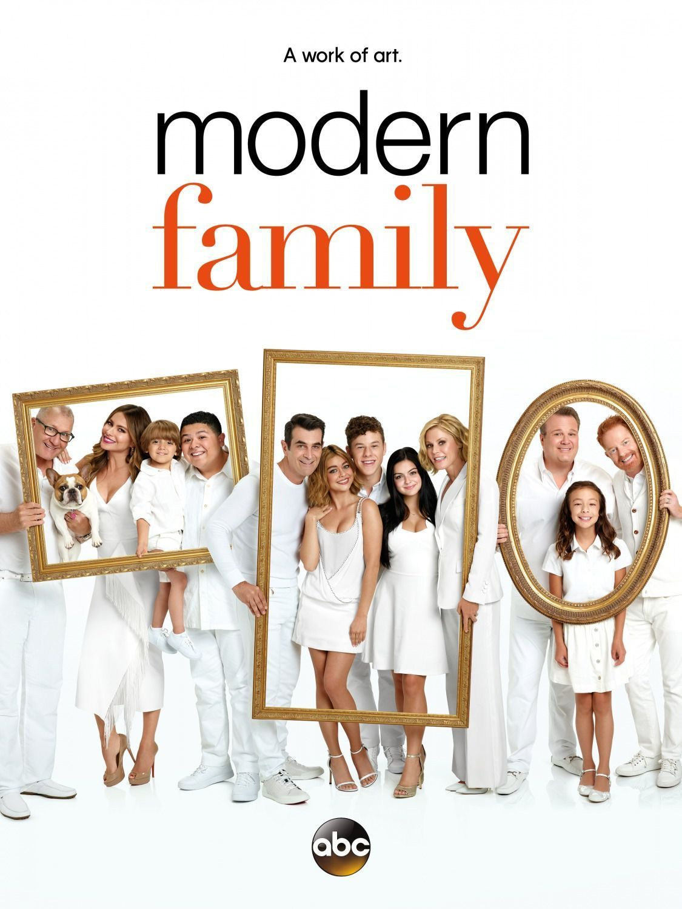

Veja mais séries:
Game Of Thrones
Vikings
Modern Family
A série original ABC é de comédia, e possui 11 temporadas.
Modern Family foca na complicada e divertida relação da família
Pritchett. O patriarca Jay se casa com uma mulher bem mais
jovem e colombiana chamada Gloria Delgado, ela se muda para a
casa da família com seu filho adolescente Manny. Claire é a
filha mais velha de Jay, casada com Phil, com quem tem três
filhos e Mitchell é o filho homossexual de Jay. Ele tem um
companheiro chamado Cameron e acabaram de adotar um bebê
vietnamita. Juntos eles vão dar boas gargalhadas e superar as
diferenças, ou não.

Os 5 melhores episódios são:
- The future Dunphys - S4.E19
- Caught in the Act - S2.E13
- Phil's Sexy, Sexy House - S7.E7
- Finale Part 2 - S11.E18
- Haley's 21st Birthday - S6.E10
Clique aqui e assista Modern Family na Netflix!